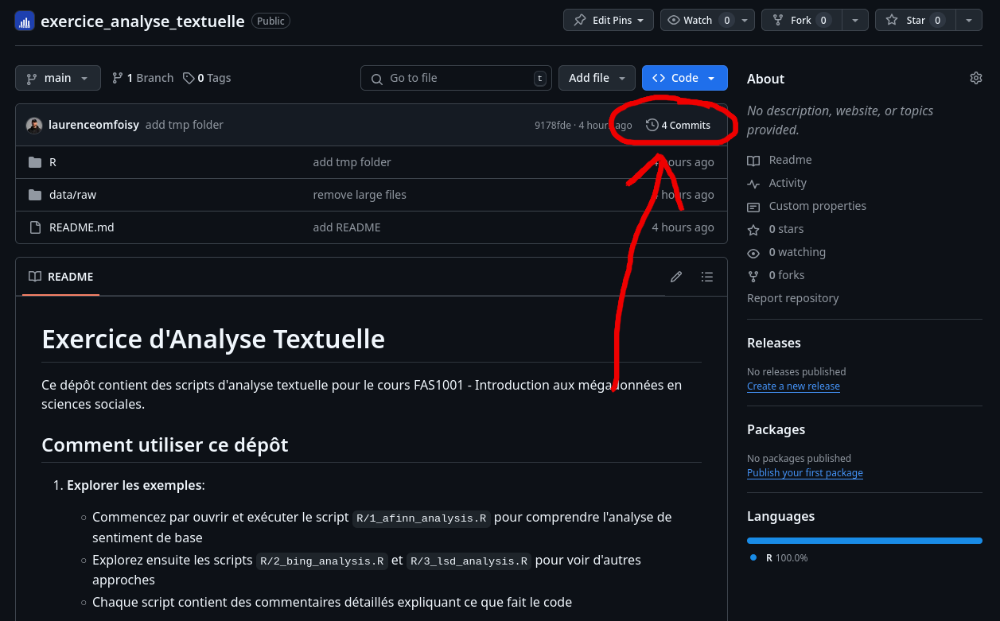
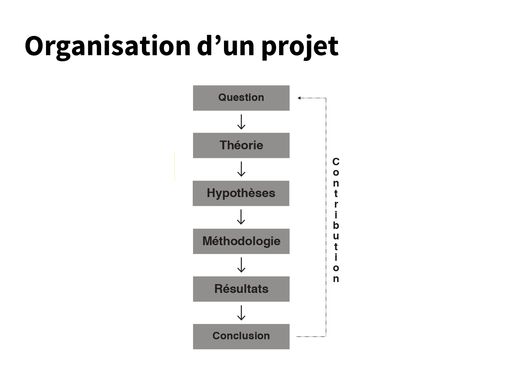
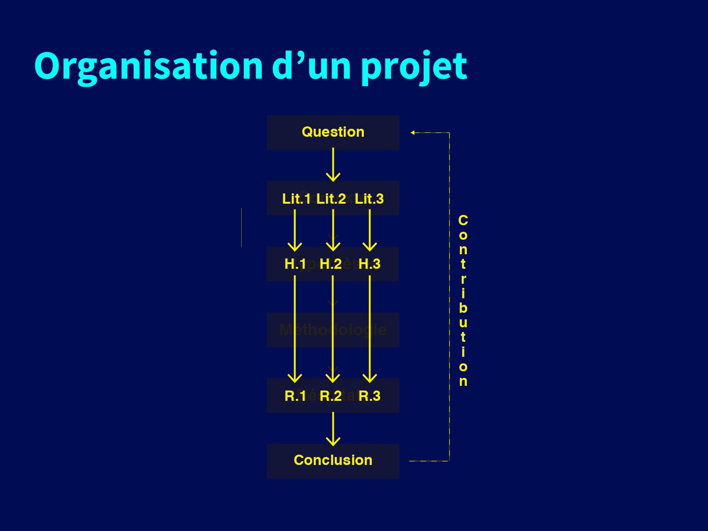
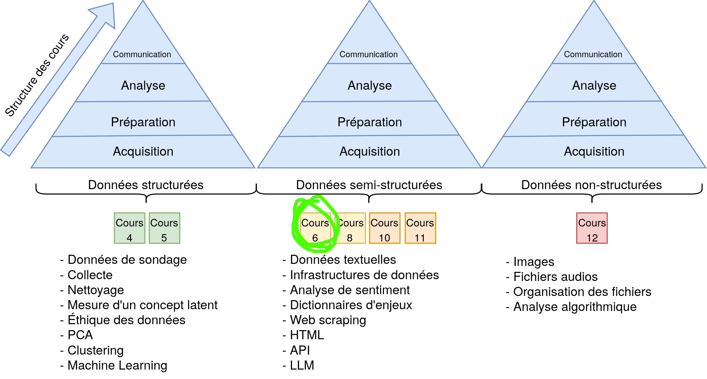
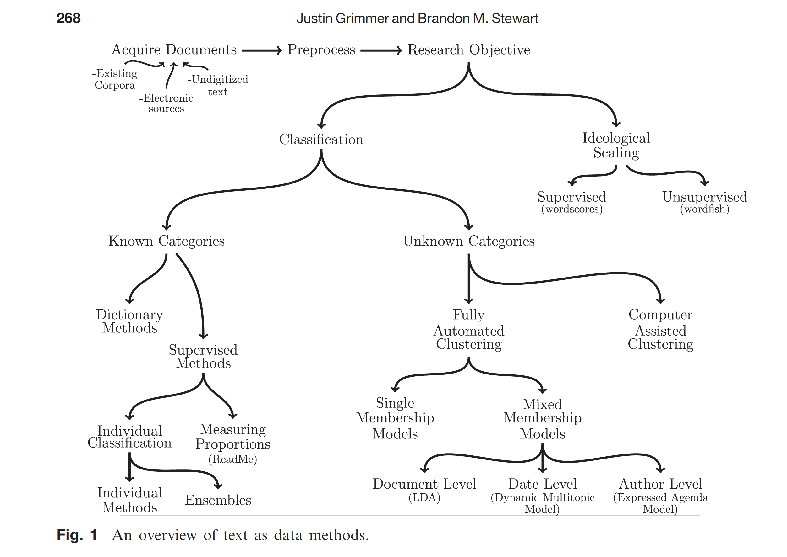
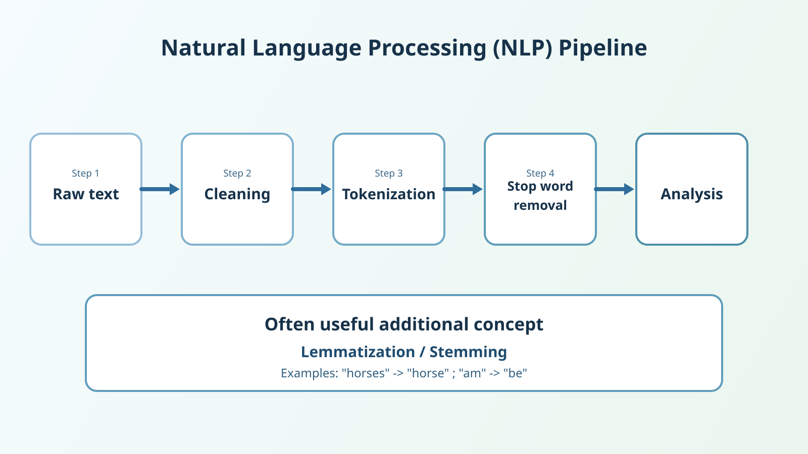
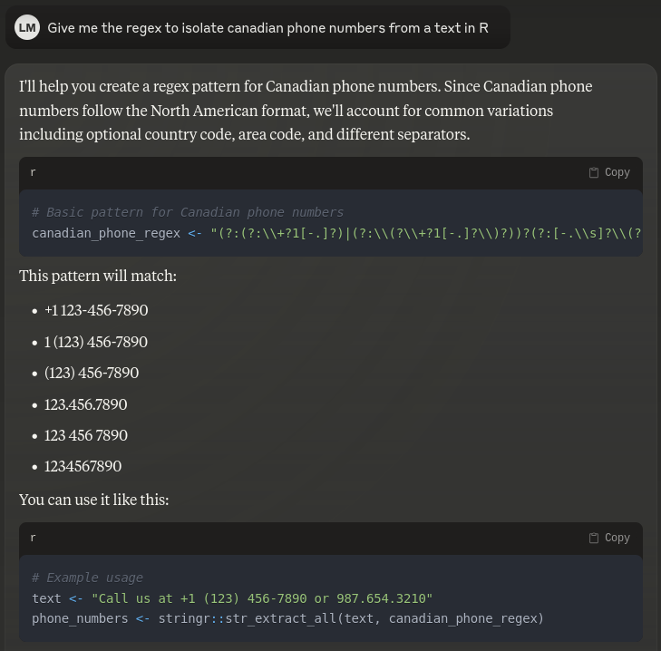
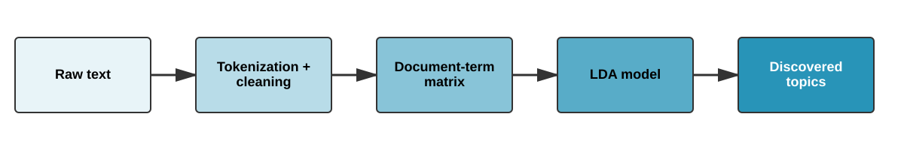

Text Analysis
Introduction to Big Data in the Social Sciences
Laurence-Olivier M. Foisy
Université de Montréal
Quiz 1 Review
- Use GitHub to save your files
- How to return to GitHub to see the previous version of your TP1
- Run table() before and after
- Avoid putting citations in raw text
- Do not leave unused code
Using Citations in Markdown
The wrong way ❌
According to Wickham (2014) (Wickham, 2014), tidy data has three properties.
The two options ✅
According to Wickham (2014), tidy data has three properties:
Tidy data has three properties (Wickham, 2014).
Do Not Leave Unused Code
Use GitHub history to see changes

TP2 - Midterm Assignment
- Due on March 11, 2025, before midnight
- 20% of the final grade


Suggested Template
- Introduction
- Research Question
- Literature Review
- Hypotheses Derived from the Literature
- Data and Methodology
- Results
- Discussion
- Conclusion
Introduction to Text Analysis
Course Structure


Why Analyze Text?
Data is Everywhere 🌎 🌍 🌏
- Large quantities of text data are available
- Increasingly accessible research methods
- Any ideas on different sources of text data?
The Explosion of Text Data
- Social media
- Press articles
- Legal documents
- Surveys (open-ended questions)
- Emails
- Instant messages
- And much more
What Can We Do with Text?
- Sentiment analysis
- Document classification
- Topic extraction
- Automatic summarization
- Discourse analysis
Different Text Analysis Methods

The Text Processing Pipeline

Tokenization
Splitting text into words
"I love analyzing text"
↓
["I", "love", "analyzing", "text"]Stopwords
What to remove?
French: le, la, de, et, un, dans, est…
English: the, a, an, in, on, at, is…
Before and After
Before
the cat is on the rug6 words
After
chat tapis2 meaningful words
Introduction to Regular Expressions
What Are We Trying to Do?
- Find patterns in text
- Example: Find all phone numbers in a document
- Example: Extract all emails from a text
A Concrete Example
Imagine you have this text:
How do we automatically find all phone numbers?
The “Manual” Solution
- Look for digits
- Grouped in 3s or 4s
- Separated by hyphens
- Starting with 514 or 438
The Regex Solution
Breaking Down the Pattern
\d: a digit (0-9){3}: exactly 3 times-: a hyphen- So
\d{3}-\d{3}-\d{4}finds: “514-555-1234”
A Second Example: Emails
Let’s use the same text:
How to automatically find all email addresses?
The “Manual” Solution
- Look for letters
- Followed by a @ symbol
- Followed by the domain name
- Ending with .ca, .com, etc.
The Regex Solution
Breaking Down the Pattern
[a-zA-Z0-9._%+-]+: letters, numbers, and special characters (before @)@: the @ symbol[a-zA-Z0-9.-]+: letters, numbers, periods, and hyphens (domain name)\\.: a period (escaped with \)[a-zA-Z]{2,}: at least 2 letters (.ca, .com, .info, etc.)- So this pattern finds: “marie@udem.ca” and “jean.dupont@umontreal.ca”
Why is it Useful?
- Automates pattern searching
- Works on any amount of text
- Faster and more reliable than manual searching
- Essential for cleaning text data
Use in R
The stringr Package
- Part of the tidyverse
- Simple and consistent functions
- Clear documentation with many examples
Practical Example
Basic Regex Building Blocks
\d : Digits
[A-Z] : Uppercase letters
\s : Spaces
Special Characters
\w : Word (letters + digits + _)
. : Any character
Use Cases for Text Analysis
Remove URLs from text
Extract hashtags
Normalize dates
Quantifiers: How Many Times?
The + : “one or more”
The * : “zero or more”
The ? : “optional (zero or one)”
Practical Examples for the Social Sciences
Extract Canadian postal codes
Extract Twitter handles
Extract percentages
How to Use Regex in R?
- Phone numbers?
- Email addresses?
- Percentages?
Artificial Intelligence 😉

Sentiment Analysis
Dictionary-Based Analysis
The Principle
Assign a score to each word based on its emotional connotation
| Word | Score |
|---|---|
| excellent | +3 |
| good | +1 |
| bad | -1 |
| horrible | -3 |
Text score = sum or average of the scores
What is a Sentiment Dictionary?
A list of words with predefined scores
- Manually created by experts
- Each word associated with a score (positive/negative)
Advantages
- Fast and reproducible
- No training required
Popular Dictionaries
| Dictionary | Language | Score Type | Usage |
|---|---|---|---|
| AFINN | EN | -5 to +5 | Social media, reviews |
| Bing | EN | Pos/Neg | General analysis |
| NRC | EN/FR | 8 emotions | Emotional analysis |
| Lexicoder | EN/FR | Binary | Political texts |
| VADER | EN | -1 to +1 | Twitter, slang |
The AFINN Dictionary
Created by Finn Årup Nielsen (2011)
- 2,477 words in English
- Scores from -5 (very negative) to +5 (very positive)
- Optimized for short texts (Twitter, reviews)
- Includes informal vocabulary
Examples
| Word | Score | Word | Score |
|---|---|---|---|
| love | +3 | hate | -3 |
| excellent | +3 | terrible | -3 |
| good | +3 | bad | -3 |
| disappointed | -2 | recommend | +2 |
Analysis with AFINN: La ligne rouge
Super good kebab! The portions are generous, the prices are really reasonable, and the quality is there. Tasty meat, fresh bread, and everything is well seasoned. An excellent address for a meal that is good without breaking the bank. I recommend!
- Sentiment: Positive
- Topics: Food, Price
- Rating: 5/5
Step 1: Raw Text
# Create a data.frame with our review
review <- data.frame(
restaurant = "La ligne rouge",
text = "Super good kebab! The portions are generous, the prices are really reasonable, and the quality is there. Tasty meat, fresh bread, and everything is well seasoned. An excellent address for a meal that is good without breaking the bank. I recommend!",
stringsAsFactors = FALSE
)Yields a dataframe like this
| restaurant | text |
|---|---|
| La ligne rouge | Super good kebab! […] |
Step 2: Cleaning
# Cleaning with stringr
review_clean <- review
review_clean$text <- stringr::str_to_lower(review_clean$text) # Lowercase
review_clean$text <- stringr::str_remove_all(review_clean$text, "!") # Exclamations
review_clean$text <- stringr::str_remove_all(review_clean$text, "\\.") # Periods
review_clean$text <- stringr::str_remove_all(review_clean$text, ",") # CommasSuper good kebab! The portions are generous, the prices are really reasonable, and the quality is there. Tasty meat, fresh bread, and everything is well seasoned. An excellent address for a meal that is good without breaking the bank. I recommend!
Step 2: Cleaning
# Cleaning with stringr
review_clean <- review
review_clean$text <- stringr::str_to_lower(review_clean$text) # Lowercase
review_clean$text <- stringr::str_remove_all(review_clean$text, "!") # Exclamations
review_clean$text <- stringr::str_remove_all(review_clean$text, "\\.") # Periods
review_clean$text <- stringr::str_remove_all(review_clean$text, ",") # Commassuper good kebab the portions are generous the prices are really reasonable and the quality is there tasty meat fresh bread and everything is well seasoned an excellent address for a meal that is good without breaking the bank i recommend
Step 3: Tokenization
r$> head(tokens, 10)
restaurant word
1 La ligne rouge super
2 La ligne rouge good
3 La ligne rouge kebab
4 La ligne rouge the
5 La ligne rouge portions
6 La ligne rouge are
7 La ligne rouge generous
8 La ligne rouge the
9 La ligne rouge prices
10 La ligne rouge areStep 4: Stop Word Removal
r$> head(tokens_clean, 10)
restaurant word
1 La ligne rouge super
2 La ligne rouge good
3 La ligne rouge kebab
4 La ligne rouge portions
5 La ligne rouge generous
6 La ligne rouge prices
7 La ligne rouge really
8 La ligne rouge reasonable
9 La ligne rouge quality
10 La ligne rouge tastyStep 5: Analysis (AFINN)
r$> head(arranged_scores, 10)
word value
1 super 3
2 good 3
3 excellent 3
4 good 3
5 generous 2
6 recommend 2
7 fresh 1Step 5: Analysis (AFINN)
r$> total_sentiment
n_words total_score avg_score
1 7 17 2.428571With Multiple Texts
Nothing exceptional, just edible. I had good feedback about the food and I was very, very disappointed. Not to mention cash only which for me is unacceptable. Too many good restaurants in the neighborhood, I won’t go back there
Food is good and price is ok. The only issu is the attitude of the staff. The lady at he cash register and the guy that takes the orders seriously lack client service skills. Both are very rude. Hygiene is another issue, there are flies all over the place. In addition to all this, they only take cash.
# Create a data.frame with multiple reviews
reviews <- data.frame(
restaurant = "La ligne rouge",
text = c(
"Super good kebab! The portions are generous, the prices are really reasonable, and the quality is there. Tasty meat, fresh bread, and everything is well seasoned. An excellent address for a meal that is good without breaking the bank. I recommend!",
"Nothing exceptional, just edible. I had good feedback about the food and I was very, very disappointed. Not to mention cash only which for me is unacceptable. Too many good restaurants in the neighborhood, I won't go back there",
"Food is good and price is ok. The only issu is the attitude of the staff. The lady at he cash register and the guy that takes the orders seriously lack client service skills. Both are very rude. Hygiene is another issue, there are flies all over the place. In addition to all this, they only take cash."
),
stringsAsFactors = FALSE
) %>%
dplyr::mutate(id = 1:nrow(.))Cleaning Multiple Texts
reviews_clean <- reviews
reviews_clean$text <- stringr::str_to_lower(reviews_clean$text) # Lowercase
reviews_clean$text <- stringr::str_remove_all(reviews_clean$text, "!") # Exclamations
reviews_clean$text <- stringr::str_remove_all(reviews_clean$text, "\\.") # Periods
reviews_clean$text <- stringr::str_remove_all(reviews_clean$text, ",") # CommasStep 3: Tokenization
r$> head(tokens, 10)
restaurant id word
1 La ligne rouge 1 super
2 La ligne rouge 1 good
3 La ligne rouge 1 kebab
4 La ligne rouge 1 the
5 La ligne rouge 1 portions
6 La ligne rouge 1 are
7 La ligne rouge 1 generous
8 La ligne rouge 1 the
9 La ligne rouge 1 prices
10 La ligne rouge 1 areStep 4: Stop Word Removal
r$> head(tokens_clean, 10)
restaurant id word
1 La ligne rouge 1 super
2 La ligne rouge 1 good
3 La ligne rouge 1 kebab
4 La ligne rouge 1 portions
5 La ligne rouge 1 generous
6 La ligne rouge 1 prices
7 La ligne rouge 1 really
8 La ligne rouge 1 reasonable
9 La ligne rouge 1 quality
10 La ligne rouge 1 tastyStep 5: Sentiment Analysis (AFINN)
r$> head(sentiment_scores, 10)
restaurant id word value
1 La ligne rouge 1 super 3
2 La ligne rouge 1 good 3
3 La ligne rouge 1 generous 2
4 La ligne rouge 1 fresh 1
5 La ligne rouge 1 excellent 3
6 La ligne rouge 1 good 3
7 La ligne rouge 1 recommend 2
8 La ligne rouge 2 good 3
9 La ligne rouge 2 disappointed -2
10 La ligne rouge 2 unacceptable -2Step 5: Sentiment Analysis (AFINN)
# Calculate summary statistics per review
sentiment_summary <- sentiment_scores %>%
group_by(id, restaurant) %>%
summarise(
total_sentiment = sum(value), # Sum of all sentiment scores
mean_sentiment = mean(value), # Average sentiment
word_count = n(), # Number of sentiment words
min_sentiment = min(value), # Most negative word
max_sentiment = max(value) # Most positive word
) %>%
ungroup()Here are the results
r$> print(sentiment_summary)
# A tibble: 3 × 7
id restaurant total_sentiment mean_sentiment word_count min_sentiment max_sentiment
<int> <chr> <dbl> <dbl> <int> <dbl> <dbl>
1 1 La ligne rouge 17 2.43 7 1 3
2 2 La ligne rouge 2 0.5 4 -2 3
3 3 La ligne rouge 1 0.5 2 -2 3Reassembling the Data
Merging the original text with the analysis:
r$> sentiment_summary_with_text
# A tibble: 3 × 8
id restaurant total_sentiment mean_sentiment word_count [..] text
<int> <chr> <dbl> <dbl> <int> [..] <chr>
1 1 La ligne rouge 17 2.43 7 [..] Super good kebab! [...]
2 2 La ligne rouge 2 0.5 4 [..] Nothing exceptional [...]
3 3 La ligne rouge 1 0.5 2 [..] Food is good and price is ok. [...]
Practical Advice
- Validation
- Manually check results
- Compare dictionaries
- Document methodological choices
- Limitations
- No dictionary is perfect
- Context is always important
- Validate with qualitative analysis
Which Lexicon to Choose?
| Lexicon | Score Type | Strengths | Ideal Usage | Discipline |
|---|---|---|---|---|
| AFINN | -5 to +5 | Nuanced, simple | Social media, reviews | Marketing |
| BING | Pos/Neg | Simple, precise | General analysis | Social Sciences |
| NRC | 8 emotions | Context-rich | Emotional analysis | Psychology |
| Lexicoder | Binary + themes | Academically validated | Political discourse | Political Science |
| VADER | -1 to +1 | Handles emojis/web | Social media | Communications |
Limitations of Sentiment Analysis
Linguistic Problems
- Irony: “Great, another delay…”
- Idiomatic expressions: “Under the weather”
- Cultural context: “Sick” = ill or cool?
- Complex negations: “Not bad at all”
Technical Limitations
- Dictionary dependency
- Ambiguous words
- Aggregation hiding nuances
- Evolution of language
When NOT to Use
- Very short texts (< 5 words)
- Highly specialized vocabulary
- Strong presence of irony/sarcasme
Best Practices
- Manually validate a sample
- Use multiple dictionaries
- Analyze by segments
- Document your choices
- Acknowledge limitations
LDA: Latent Dirichlet Allocation
What is it?
- A method to automatically discover topics in a collection of texts
- Developed in 2003 (Blei, Ng, Jordan)
- Unsupervised learning: the algorithm discovers structures on its own

The Intuition Behind LDA
The Central Idea
- Each document contains multiple topics
- Each topic is a collection of related words
- Words appear with different probabilities in each topic
How Does LDA Work?
Unsupervised Approach
- No prior knowledge
- No predefined word list
- No labels needed
- Automatic Discovery
- Relationships between words emerge from the data
- Topics form naturally
The Process in Practice
Simplified Steps
- Transform texts into numbers
- Start with random assignments
- Repeat thousands of times:
- For each word: which topic is most likely?
- Update distributions
- Arrive at coherent groups
Advantages for the Social Sciences
Why use LDA in the social sciences?
- Analysis of large amounts of text (political speeches, social media)
- Objective topic discovery without prior interpretive bias
- Tracking the evolution of discourse over time
- Possible combination with sentiment analysis
Limitations to Keep in Mind
- Number of topics (k) must be defined in advance
- Topics require human interpretation
- Needs a sufficient volume of data
The 4 Steps of the LDA Process

Topic Modeling
# Loading libraries
library(tidytext)
library(tidyr)
library(dplyr)
library(ggplot2)
library(topicmodels)
# Load restaurant review examples
reviews <- data.frame(
restaurant = "La ligne rouge",
text = c(
"Super good kebab! The portions are generous, the prices are really reasonable, and the quality is there. Tasty meat, fresh bread, and everything is well seasoned. An excellent address for a meal that is good without breaking the bank. I recommend!",
"Nothing exceptional, just edible. I had good feedback about the food and I was very, very disappointed. Not to mention cash only which for me is unacceptable. Too many good restaurants in the neighborhood, I won't go back there",
"Food is good and price is ok. The only issu is the attitude of the staff. The lady at he cash register and the guy that takes the orders seriously lack client service skills. Both are very rude. Hygiene is another issue, there are flies all over the place. In addition to all this, they only take cash."
),
stringsAsFactors = FALSE
) %>%
dplyr::mutate(id = 1:nrow(.))Creating the Document-Term Matrix
<<DocumentTermMatrix (documents: 3, terms: 71)>>
Non-/sparse entries: 77/136
Sparsity : 64%
Maximal term length: 11
Weighting : term frequency (tf)
Sample :
Terms
Docs food good price quality
doc_1 0 2 0 1
doc_2 1 1 0 0
doc_3 1 1 1 0Applying the LDA Model
# Run the LDA model
set.seed(123) # For reproducibility
lda_model <- LDA(reviews_dtm, k = 2, control = list(seed = 123, verbose = TRUE))
# Examine the topic distribution for each document
topics <- tidy(lda_model, matrix = "gamma")
topics_wide <- topics %>%
pivot_wider(names_from = topic, values_from = gamma)
print(topics_wide)# A tibble: 3 × 3
document `1` `2`
<chr> <dbl> <dbl>
1 doc_1 0.692 0.308
2 doc_2 0.333 0.667
3 doc_3 0.391 0.609Extracting the Top Terms for Each Topic
r$> print(top_terms)
# A tibble: 20 × 3
# Groups: topic [2]
topic term beta
<int> <chr> <dbl>
1 1 portions 0.0384
2 1 hygiene 0.0381
3 1 takes 0.0374
4 1 seasoned 0.0366
5 1 recommend 0.0364
6 1 lady 0.0352
7 1 disappointed 0.0334
8 1 client 0.0333
9 1 super 0.0328
10 1 address 0.0321
11 2 cash 0.113
12 2 food 0.0600
13 2 bank 0.0390
14 2 meal 0.0389
15 2 feedback 0.0377
16 2 bread 0.0374
17 2 meat 0.0371
18 2 kebab 0.0350
19 2 prices 0.0317
20 2 generous 0.0305Interpretation of Results
Topic: Service and Experience
- portions (0.0384)
- hygiene (0.0381)
- takes (0.0374)
- seasoned (0.0366)
- recommend (0.0364)
- lady (0.0352)
- disappointed (0.0334)
- client (0.0333)
- super (0.0328)
- address (0.0321)
Topic: Food and Price
- cash (0.1130)
- food (0.0600)
- bank (0.0390)
- meal (0.0389)
- feedback (0.0377)
- bread (0.0374)
- meat (0.0371)
- kebab (0.0350)
- prices (0.0317)
- generous (0.0305)
Results with k=3 Topics
Topic 1: Food Quality
good, kebab, meat, bread, quality, tasty, fresh, seasoned
Topic 2: Service and Experience
staff, attitude, rude, disappointed, exceptional, lady, client
Topic 3: Price and Payment
prices, reasonable, cash, bank, meal, generous, portions
Results with k=5 Topics
Discovered Topics
- Culinary Quality: kebab, meat, bread, fresh, tasty
- Portions and Generosity: portions, generous, quality
- Price: prices, reasonable, bank, meal
- Customer Service: staff, attitude, lady, client
- Problems: disappointed, rude, cash, hygiene, flies
How to Choose k?
Common Approaches
- Domain Intuition: How many topics do you expect?
- Multiple Trials: Test k=2, 3, 5, 10 and compare
- Statistical Metrics: Perplexity, coherence
- Interpretability: Are the topics coherent?
Rule of Thumb
Start small (k=2-5) and increase progressively
Use Cases in the Social Sciences
- Analyze thousands of parliamentary speeches
- Identify topics in election campaigns
- Track the evolution of public debates over time
- Discover patterns in open-ended survey questions
Classification of Reviews by Topic
# Display the topic distribution for each review
document_topics <- augment(lda_model, data = reviews_dtm)
# Format for readability
review_classifications <- document_topics %>%
select(document, .topic) %>%
distinct() %>%
mutate(
review_id = as.integer(gsub("doc_", "", document)),
review_text = reviews$text[review_id],
primary_topic = ifelse(.topic == 1, "Food", "Service/Experience")
) %>%
select(document, review_text, primary_topic) %>%
arrange(document)
# Display review classification
head(review_classifications, 3)Classification of Reviews by Topic
Topic: Food
Review 1
“Super good kebab! The portions are generous, the prices are really reasonable…”
Keywords: kebab, meat, bread, portions
Topic: Service/Experience
Review 2
“Nothing exceptional, just edible. I had good feedback about the food and I was very, very disappointed…”
Keywords: disappointed, cash only, exceptional
Review 3
“Food is good and price is ok. The only issu is the attitude of the staff…”
Keywords: staff, attitude, hygiene